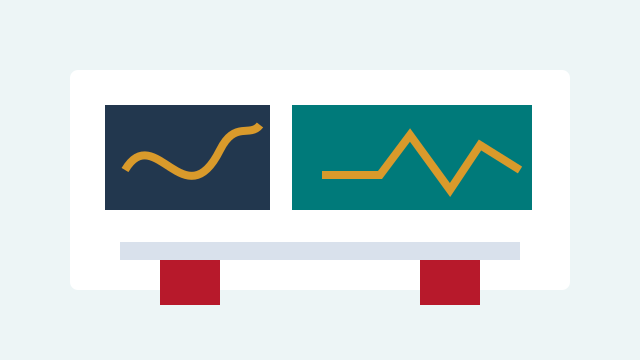
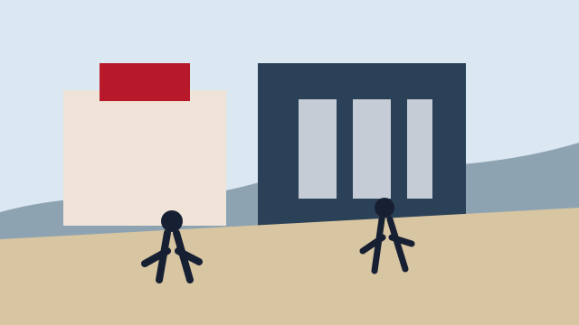

Research
Sejong Tops Korea in Research Quality for Three Consecutive Years
Research Quality score of 92.6 in the 2026 THE World University Rankings — the only Korean university in the 90-point range.
News & Notices
Stay informed with the latest news, events, research breakthroughs, and official notices from Sejong University.
Updates

Research Quality score of 92.6 in the 2026 THE World University Rankings — the only Korean university in the 90-point range.
The 7th International Student Futures Spring 2026 event attracted more than 600 students and 60 exhibitors on March 25, 2026.

Outstanding university students from around the world are invited to apply for the 2026 summer program hosted on our Seoul campus.
The updated app offers improved access to academic services, electronic attendance, schedules, and campus resources. Available now on iOS and Android. — 2026.02.26
Ceremony details and logistics for graduating students and their families attending the 83rd commencement. — 2025.08.19
Sejong researchers developed technology performing AI computations on edge devices without cloud servers — a milestone for real-time, privacy-preserving intelligence.
Selected for the Korean government's CAMPUS Asia-AIMS program, expanding academic cooperation with Southeast Asian universities through student and faculty exchanges.
International students requiring visa changes before the summer term must submit group applications through the international office by the posted deadline. — 2025.06.20
Development of a next-generation silicon anode enabling faster charging and significantly longer battery life for electric vehicles and energy storage systems.